Il sito web è stato creato per permettere ai fan di Stranger Things di conoscere le canzoni che fanno parte della serie, ma anche per far scoprire a chi non è fan il programma e i grandi successi degli anni passati. Il sito presenta vari contenuti: canzoni, video, playlist e descrizioni apposite dedicate, per offrire un’ampia visione sulla serie, ma anche sui brani scelti.
L'idea principale è fondere il presente (epoca della serie), con il passato (epoca delle canzoni), per sottolineare come il passato influenzi sempre il presente, indipendentemente dalle generazioni.
1-Benchmarking
Obiettivi: Promuovere grandi successi del passato e proporli alle nuove generazioni interessate alla serie.
Target utente: Principalmente mi rivolgo a chi è fan della serie, ma il mio target è piuttosto ampio e può comprendere appassionati di musica, giovani, adulti, i quali hanno vissuto l’epoca di cui si parla nella serie (anni 80), e anche bambini. Anche l'età dei protagonisti della serie spazia, per questo l'età stessa dei fan varia.
Competitors:
what-song.com: è un sito che permette di conoscere le colonne sonore di ogni film e serie tv. Ovviamente non si concentra in modo dettagliato su ogni serie e soprattutto su ogni canzone, infatti mostra soltanto i titoli; mentre il mio progetto ha lo scopo di proporre ogni singolo brano dettagliatamente con anche la scena dedicata mostrata.
Spotify: questa piattaforma musicale offre un’infinita varietà di playlist, tra cui quelle concentrate sulle colonne sonore dei film e delle serie tv. Infatti ho trovato tantissime playlist di Stranger Things e proprio per questo ho deciso di crearne una io interamente dedicata ai brani che ho inserito nel sito. Questa piattaforma è molto utile e comoda per la riproduzione dei brani, ma non offre descrizioni ampie e contenuti multimediali dedicati, ovvero ciò che ho aggiunto nel mio sito.
2-Struttura e Layout
Architettura del sito:
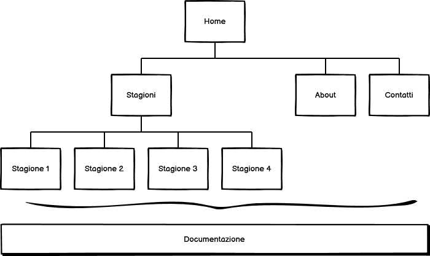
Wireframe:
Home
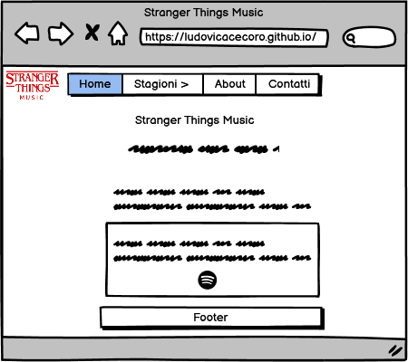
Stagione 1/2/3/4
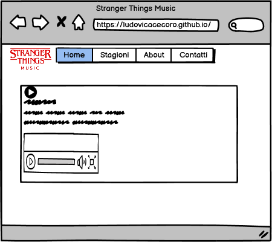
About
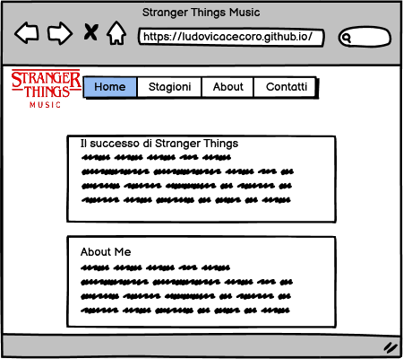
Contatti
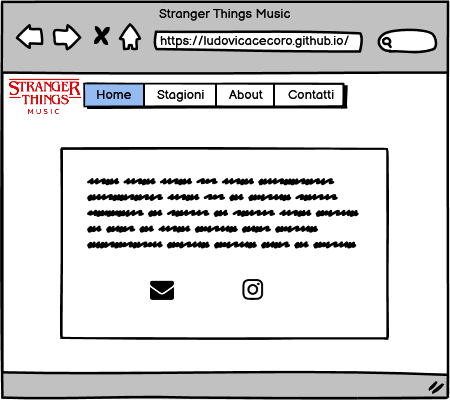
Look and feel:
Font: Chakra Petch
Colori:
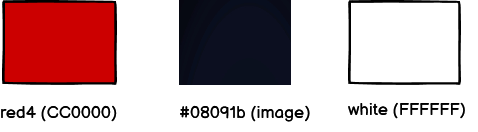
Ho scelto di utilizzare i colori del logo della serie tv ovvero rosso e blu scuro per rimanere in tema. Ma per rendere il sito più coinvolgente ho deciso di spezzare queste tinte unite con uno sfondo molto colorato, ovvero un disegno della protagonista Undici che ritrae una scena della terza stagione.
In più ho voluto tenere il design dell'header molto semplice per ricordare il layout di Netflix, piattaforma che distribuisce la serie.
Anche la scelta del font è studiata: quello che ho scelto ricorda il font delle scritte presenti nei videogiochi degli anni 80.
3-Linguaggi e Strumenti
Linguaggi web: HTML e CSS.
Strumenti: Sublime Text, Bootstrap (header e colonne), Fontawesome (icone), Google Fonts, Google Analitycs (numero di utenti e views), Github (pubblicazione), Logo Maker (per creare il logo), Youtube (video delle scene e canzoni), Wikipedia (informazioni dei brani) e Google Images (per gli sfondi).
1-Background
Mi è capitato molto spesso di guardare un film e di chiedermi quale canzone ci fosse in una determinata scena. Per informarmi ho compiuto molte ricerche passando da playlist di Spotify, a Wikipedia per sapere qualcosa in più sull'artista e sul brano e infine a Youtube.
Per questo il mio sito racchiude tutto in una pagina web unica: canzone, informazioni e scena in cui appare.
2-Obiettivi comunicativi
L'obiettivo principale è quello di mostrare musica del passato a chi non la conosce, fornendo strumenti interattivi (video, icone cliccabili, playlist).
Per questo gli obiettivi prefissati per il sito sono: il raggiungimento di 50 views del sito e 20 likes del post Instagram della pagina ufficiale, dove posterò estratti del sito.
3-Target audience e messaggio
Il target principale sono i fan della serie tv, che comprendono tutte le età, ma soprattutto giovani e adolescenti (under 30). A questi possiamo aggiungere chi è appassionato di musica e spazia tra i generi. Questi gruppi sono facilmente raggiungibili tramite social (Instagram soprattutto). Penso che una pagina Instagram attiva dedicata possa aiutare a diffondere il sito.
4-Promozione
Promuoverò il sito attraverso una pagina web dedicata ad esso, sponsorizzandola tramite il mio profilo personale Instagram. Questa pagina sarà attiva pubblicando anche dei post/storie. In più condividerò il link tramite Whatsapp a gruppi e a persone.
5-Valutazione dei risultati
Obiettivi raggiunti:
Tutti gli obiettivi sono stati raggiunti.
Visite:
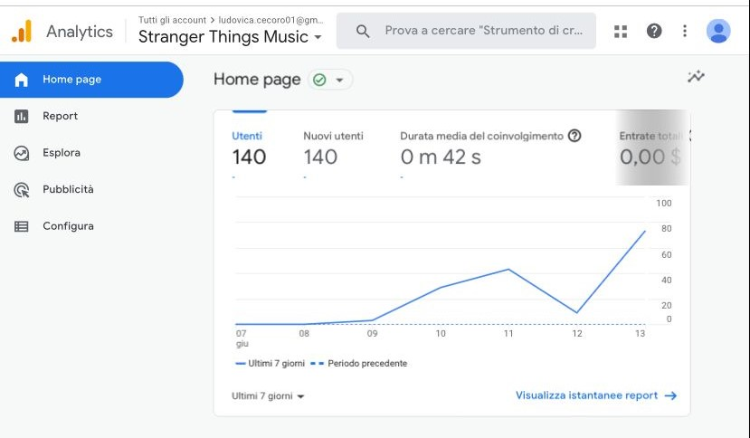
Likes:
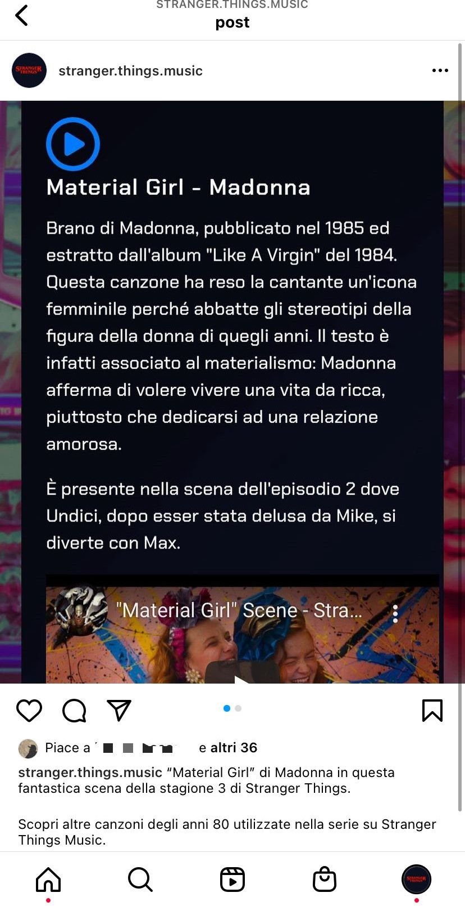
Sponsorizzazione:
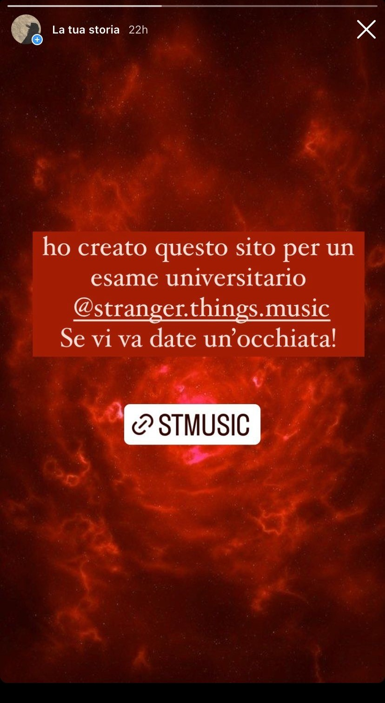 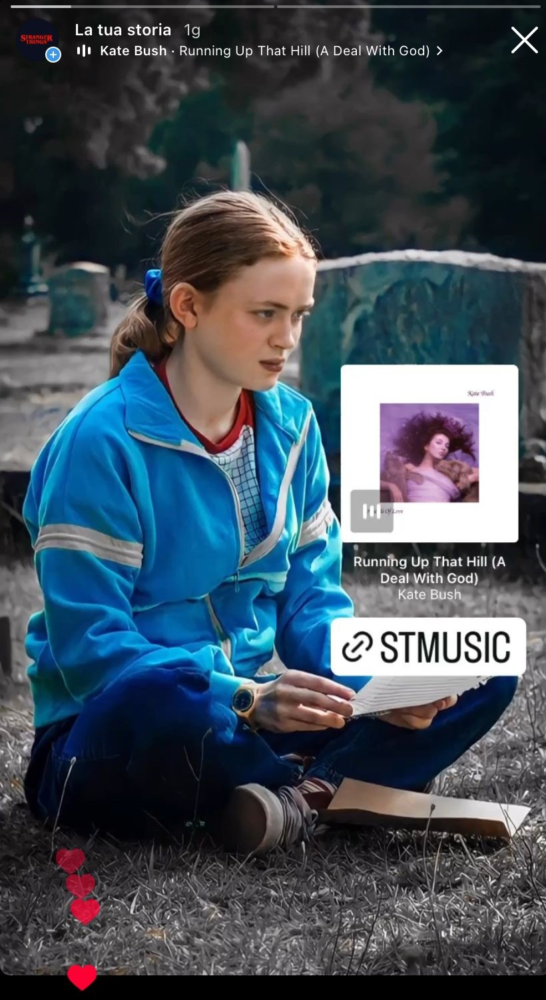 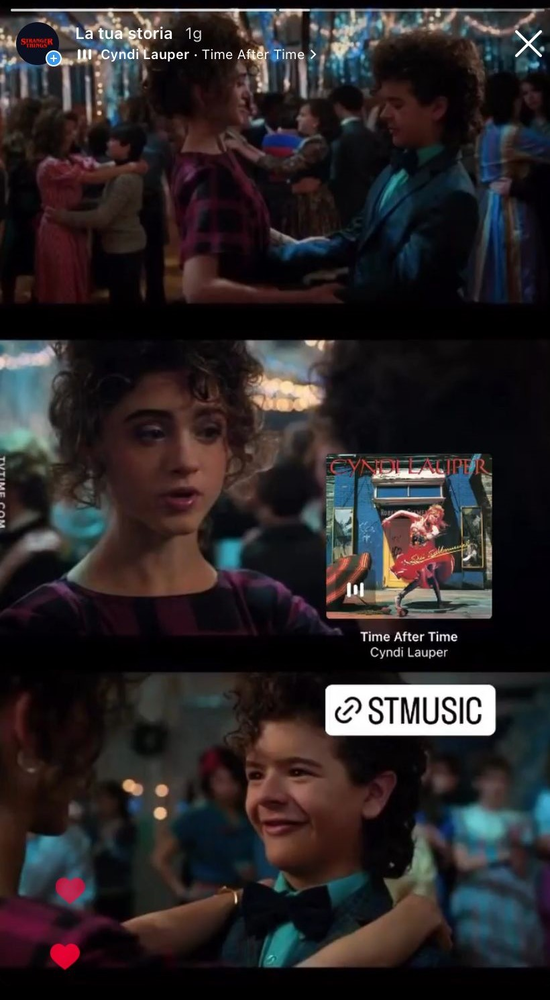
Commenti al sito:
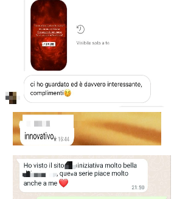